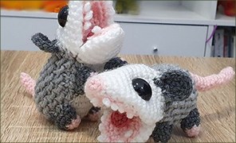
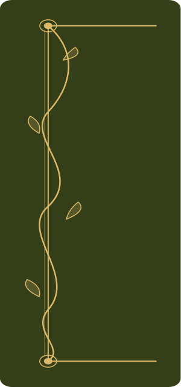
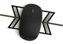
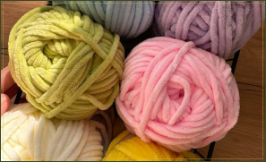
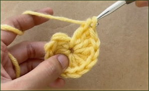

Бібліотека безкоштовних схем
Безкоштовні схеми українською мовою.

Кожна в’язальниця знає цей страх: до кінця виробу лишилося два ряди, а пряжа закінчується. Або інша історія — купуєш моток «із запасом», і він роками припадає пилом у шафі. Додайте сюди заплутані описи та іноземні скорочення, і замість відпочинку отримуєш стрес.
Ми створили «Генерал Гачок», щоб повернути у в’язання спокій.
Ми поєднали зрозумілу базу схем, короткі відеопідказки українською та простий вимірювач нитки, який працює через звичайну комп'ютерну мишку. Тепер ви чітко знаєте, скільки метрів іде на один стібок, і бачите точний розрахунок ще до початку роботи.
Більше жодних гадань на кавовій гущі та докуповувань пряжі з іншої партії. Тільки ви, затишок і впевненість у кожному рядку.

Безкоштовні схеми українською мовою.

Унікальний вимірювач нитки, що використовує CMOS-сенсор вашої мишки.

Прогнозування закінчення запасів, розрахунок потрібної пряжі для проєкту.

Детальні відеоуроки додані прямо у текст схеми.
Інтерактивна картка-закладка дозволяє відкалібрувати сенсор мишки, виміряти точну витрату нитки та зберегти розрахунки у свій кабінет.
Створіть безкоштовний акаунт, щоб зберігати точно виміряні метражі пряжі, відстежувати лічильник рядків та отримати повний доступ до каталогу схем.
Безкоштовно для усіх майстринь та майстрів